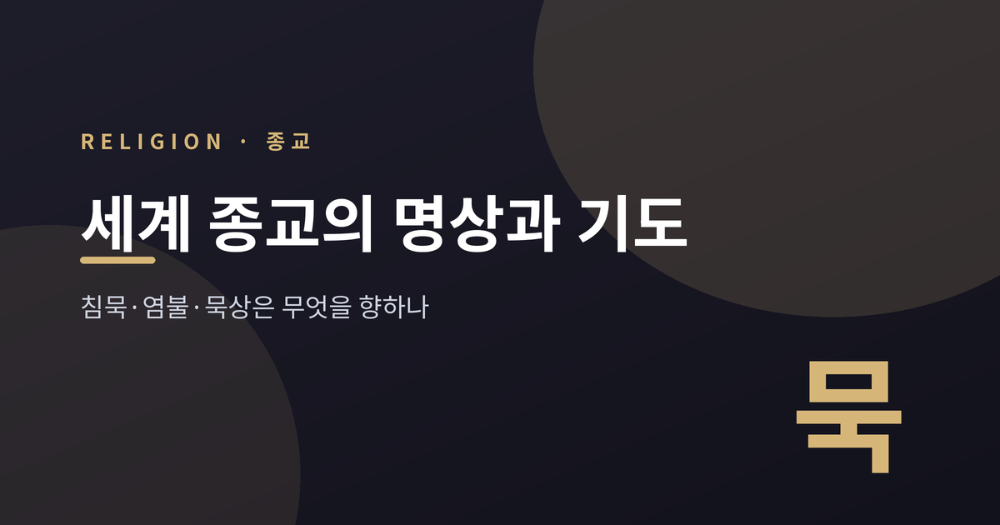
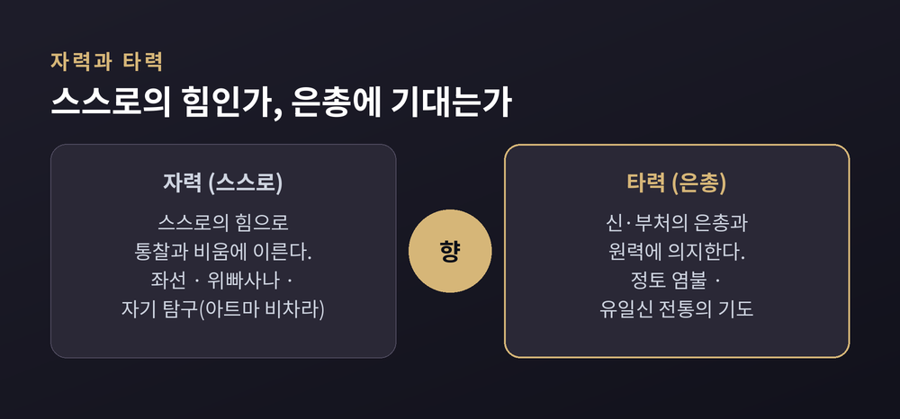
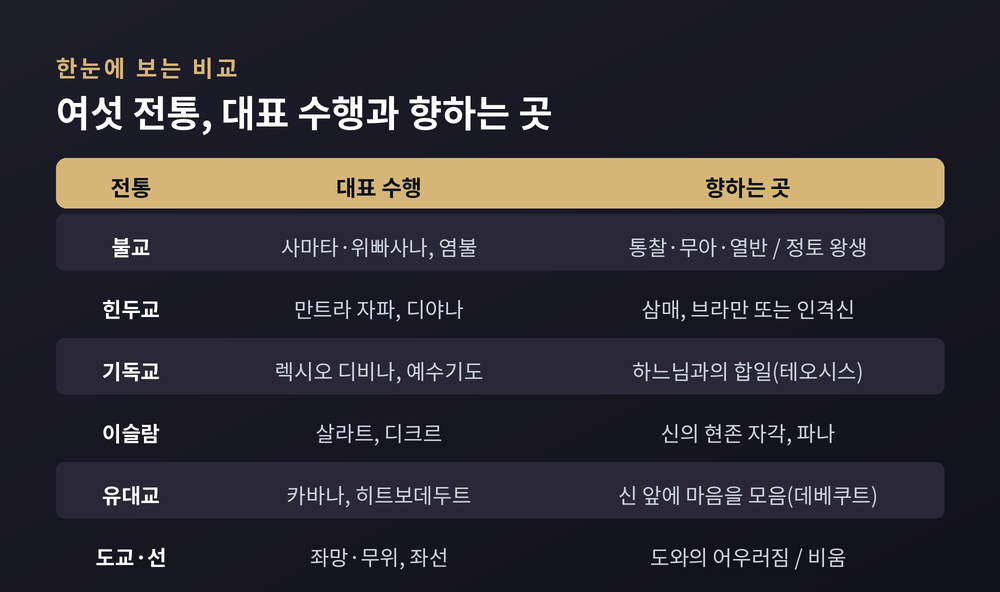
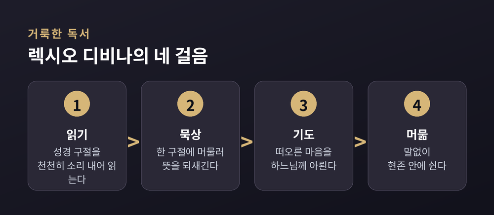
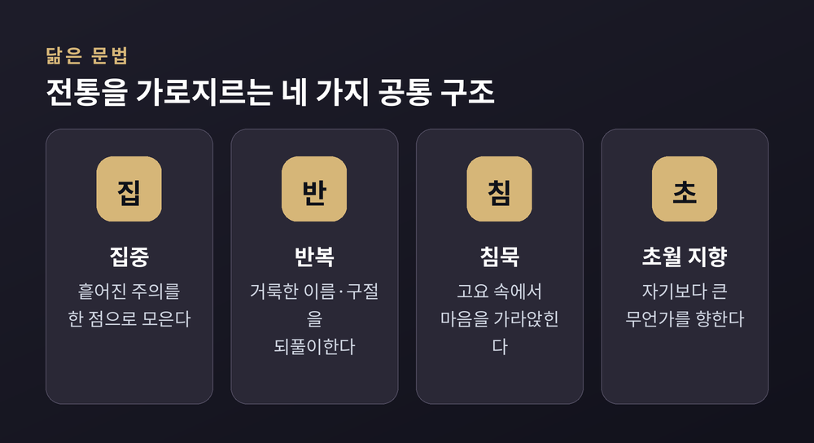

이번 글에서는 세계 여러 종교의 명상과 기도 전통을 나란히 정리해 보겠습니다.
불교의 염불, 힌두교의 만트라, 기독교의 묵상, 이슬람의 디크르, 유대교의 카바나, 그리고 도교와 선의 고요까지. 겉모습은 서로 다르지만, 그 안에는 닮은 구조가 흐릅니다. 어느 전통이 옳다는 이야기가 아닙니다. 각 전통이 스스로의 언어로 무엇을 말하는지, 그리고 그것들이 어디서 만나고 어디서 갈라지는지를 담담히 들여다보려 합니다.
흔히 명상은 마음을 다스리는 내적 훈련으로, 기도는 신을 향한 말 걸기로 나눕니다.
그러나 전통 안으로 들어가면 그 경계는 이내 흐려집니다. 이슬람에서 하루 다섯 번의 예배인 살라트는 신을 향한 기도이면서, 동시에 마음을 한곳에 모으는 훈련이기도 합니다. "살라트가 곧 디크르"라는 말이 그래서 나옵니다.
예전에는 이 둘을 깔끔히 갈라놓을 수 있다고 여겼습니다. 지금은 그렇게 보지 않는 편이 더 정확해 보입니다. 향하는 대상이 밖에 있든 안에 있든, 결국 하는 일은 비슷합니다. 흩어진 마음을 한 점으로 모으고, 무언가를 되풀이하고, 고요 속에서 자기보다 큰 무언가를 향하는 것입니다.

불교의 명상은 크게 두 갈래로 나뉩니다.
하나는 사마타(止), 곧 그침입니다. 호흡 같은 한 대상에 마음을 붙들어 흩어지지 않게 하는 집중 수행입니다. 지시는 단순합니다. 대상에 주의를 두고, 벗어나면 되돌리고, 분석하지 않습니다. 되돌리는 그 반복이 집중의 근육을 키웁니다. 목표는 삼매, 곧 깊은 고요입니다.
다른 하나는 위빠사나(觀), 통찰입니다. 지금 일어나는 것을 있는 그대로 명료하게 알아차려 지혜를 기릅니다. 모든 현상이 무상하고(無常), 괴로우며(苦), 고정된 나가 없다(無我)는 것을 직접 관찰합니다.
어느 쪽을 먼저 닦느냐를 두고는 전통마다 강조점이 다릅니다. 태국 삼림 전통은 집중을 충분히 세운 뒤 통찰로 넘어가기를 권합니다. 미얀마 마하시 전통은 처음부터 '명칭 붙이기'로 통찰을 가르칩니다. 한국 불교가 말하는 정혜쌍수(定慧雙修)는 이 둘을 함께 닦자는 뜻입니다.
전혀 다른 결의 길도 있습니다. 염불입니다. '나무아미타불'은 아미타불에게 귀의를 표하는 정형구로, '나무'는 "귀의합니다"라는 뜻입니다. 스스로의 힘으로 깨달음에 이르는 좌선과 달리, 염불은 부처의 원력에 의지해 정토에 나기를 발원하는 타력의 길입니다. 이름을 되풀이해 부른다는 점에서, 뒤에 볼 이슬람의 디크르나 기독교의 예수기도와 뜻밖에 닮았습니다.
힌두교 명상의 뼈대는 파탄잘리의 『요가수트라』에 있습니다.
여기서 명상은 여덟 단계 요가 가운데 일곱째입니다. 윤리와 몸, 호흡을 먼저 가다듬은 뒤, 안으로 향하는 세 단계가 이어집니다. 집중(다라나), 명상(디야나), 삼매(사마디)입니다. 디야나는 한 대상을 향해 끊기지 않고 흐르는 의식이라고 정의됩니다.
가장 널리 퍼진 실천은 만트라를 되풀이하는 자파입니다. 108개 구슬로 된 염주를 돌리며 '옴'이나 가야트리 만트라 같은 거룩한 소리를 반복합니다. 파탄잘리는 '옴'을 신성의 소리-상징으로 꼽았습니다.
한 가지 색으로만 칠할 수는 없습니다. 북부에서는 만트라와 신애(박티)의 전통이 짙고, 남부는 오래된 베다 낭송을 지켜 왔습니다. 아드바이타 베단타 계열은 소리 대신 침묵을 택해, '나는 누구인가'를 끝까지 캐묻는 자기 탐구를 강조합니다. 같은 힌두교 안에서도 소리로 채우는 길과 침묵으로 비우는 길이 함께 있는 셈입니다.

기독교의 관상 전통은 여러 갈래지만, 세 가지가 특히 또렷합니다.
첫째는 렉시오 디비나, 곧 거룩한 독서입니다. 6세기 성 베네딕도가 정형화했습니다. 성경을 네 걸음으로 대합니다. 읽고(lectio), 묵상하고(meditatio), 기도하고(oratio), 마지막에 말없이 머뭅니다(contemplatio). 학문적 성경 공부가 아니라, 말씀과의 직접적인 만남을 향합니다.
둘째는 동방정교의 헤시카즘입니다. '고요'를 뜻하는 그리스어 헤시키아에서 온 말입니다. 그 핵심은 예수기도입니다. "주 예수 그리스도, 하느님의 아들이여, 죄인인 저에게 자비를 베푸소서." 이 한 문장을 호흡에 맞춰 하루 종일 끊임없이 되풀이합니다. 이름을 숨결에 싣는 것입니다.
셋째는 센터링 기도입니다. 1970년대에 되살아난 침묵 수행으로, '거룩한 단어' 하나를 실마리 삼아 떠오르는 생각을 부드럽게 놓아 보내고, 하느님의 현존에 열린 채 머뭅니다.
셋 다 말의 많고 적음은 다르지만, 결국 한자리에 이릅니다. 조용해지는 것입니다.

이슬람에는 디크르가 있습니다. '신을 기억함'이라는 뜻입니다.
신의 이름과 구절을 자주 되풀이합니다. "하느님 외에 신은 없다", "하느님은 가장 위대하시다" 같은 구절을 정해진 자세와 호흡에 실어, 소리 내거나 낮게 반복합니다. 수피 교단은 저마다 고유한 디크르를 지녔고, 홀로 또는 함께 낭송합니다. 이 되풀이가 마음을 가라앉히고 가슴을 모아, 신의 현존을 늘 자각하게 한다고 봅니다.
유대교의 열쇠말은 카바나입니다. '방향' 또는 '지향'을 뜻합니다. 계명을 지키거나 기도할 때 마음을 하느님께 모으는 것을 가리킵니다. 기도가 습관적인 암송으로 굳지 않도록, '지금 내가 신 앞에 서 있다'는 자각을 잃지 않는 것입니다.
여기에 히트보데두트라는 전통도 있습니다. 정해진 틀 없이, 홀로 물러나 하느님과 개인적인 대화를 나누는 자발적 기도입니다. 16세기 카발라의 황금기를 거치며, 마음을 모으는 이 지향은 더 정교한 명상으로 자라났습니다.
동아시아에는 비움과 고요를 앞세우는 두 흐름이 있습니다.
도교에는 좌망(坐忘)이 있습니다. '앉아서 잊는다'는 뜻으로, 완전한 고요와 내맡김 속에 자기를 비우는 명상입니다. 그 바탕에는 무위(無爲)가 있습니다. 억지로 하지 않고 자연의 흐름과 어우러지는 것입니다. 여기서 고요는 게으름이 아니라, 힘으로 밀어붙이기를 넘어선 지혜로운 행위로 여겨집니다.
선불교에는 좌선이 있습니다. 고요히 앉아 호흡을 지켜보며 생각을 좇지 않습니다. 모든 생각을 없애는 것이 아니라, 떠오른 생각을 따라가지 않는 것입니다. 이를 '생각하지 않음을 생각함'이라 부릅니다.
두 전통이 가리키는 침묵은 서로 닮았습니다. 다만 길은 다릅니다. 선의 고요가 텅 빈 공(空)을 향해 마음을 비운다면, 도교의 고요는 자연의 흐름으로 되돌아갑니다.

멀리서 보면 이 전통들은 놀랍도록 닮은 일을 합니다.
흩어진 주의를 한 점으로 모읍니다. 거룩한 이름이나 구절을 되풀이합니다. 염불의 '나무아미타불', 자파의 '옴', 디크르의 신의 이름, 예수기도가 모두 그렇습니다. 그리고 침묵 속에서, 자기보다 큰 무언가를 향합니다.
그러나 가까이서 보면 향하는 곳이 서로 다릅니다.
유일신 전통은 인격적인 신과의 관계와 합일을 향합니다. 불교는 인격신이 아니라 있는 그대로의 통찰과 무아를 향합니다. 힌두교는 학파에 따라 인격신과 비인격적 브라만 사이에 넓게 걸쳐 있습니다. 도교는 자연, 곧 도(道)와의 어우러짐을 향합니다.
자기를 보는 눈도 갈립니다. 불교는 고정된 나가 없다고 관찰합니다. 수피의 파나는 자아의 소멸을, 정교의 테오시스는 신처럼 되되 신이 되지는 않음을 말합니다. 표현의 결이 저마다 다릅니다.
그러니 겉의 닮음을 곧장 속의 같음으로 읽어서는 안 됩니다. 하는 일이 비슷하다고 해서 그 뜻과 목표까지 하나인 것은 아닙니다. 이 모두를 하나의 진리로 묶으려는 시도에는 지지하는 이도, 비판하는 이도 함께 있습니다.
정리하면 이렇습니다.
세계의 명상과 기도는 저마다 다른 이름을 부르고, 저마다 다른 곳을 바라봅니다. 그러면서도 흩어진 마음을 모으고, 되풀이하고, 고요해진다는 점에서 이상하리만치 닮았습니다.
— “무엇을 향하는가는 다르되, 마음을 모아 고요로 나아간다는 몸짓은 닮았다.”
서로 다른 길이 같은 고요를 가리킬 때, 우리는 무엇을 배울 수 있을까요. 답을 서둘러 내리기보다, 그 물음을 잠시 품어 두는 편이 이 주제에는 더 어울릴지도 모르겠습니다.